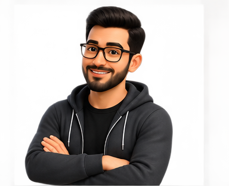
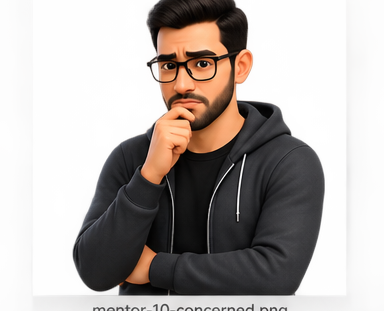

The Spiral Model
A risk-driven iterative process model in which each outward cycle moves the project forward while explicitly asking: What could go wrong, what evidence will reduce that uncertainty, and how much should we commit next?

“The spiral does not rotate because iteration looks elegant. It rotates because each cycle buys more knowledge and reduces risk before the next commitment.”
NASA's Schematic of the Standard Spiral Model
This is the main reference diagram for the lesson. Read it from the center outward: each loop represents another development iteration, while the project repeatedly passes through objectives → risk reduction → development & test → planning. The radial movement represents increasing time/cost, and the angular movement represents progress.

Translate the NASA model into one memory image: Risk Radar
The easiest way to remember Spiral is to imagine a radar screen. Every orbit scans for risk before the project moves farther from the center and commits more cost.
SMALL
What are we trying to achieve? What solution alternatives exist? What limits the choices?
Which uncertainties threaten the project? Evaluate alternatives, prototype risky ideas, and reduce the most important risks.
Choose an appropriate development approach, engineer the next level of the product, and verify that it works.
Evaluate what was learned, review the project, decide whether to continue, and plan the next outward loop.
What happens during one complete orbit?
Identify goals for the cycle, alternatives for achieving them, requirements, and constraints.
Assess alternatives, identify significant risks, and perform activities—often prototypes or experiments—to reduce those risks.
Develop and validate the next-level product using a development model appropriate to the risks and objectives.
Review results with stakeholders, assess the current product, and plan the next spiral cycle.
Use Spiral to build a University AI Exam Proctoring System
This project is intentionally risky: AI accuracy, privacy, fairness, integration, network reliability, user acceptance, and false accusations can all damage the project. Spiral is useful because those uncertainties must be reduced before large commitments.
FEASIBILITY
Objective: can AI proctoring work at all?
Do not begin by building the whole platform. The first cycle has a narrow objective: determine whether webcam-based behavior detection is technically feasible and accurate enough to justify further investment.
PRIVACY
Objective: reduce privacy and fairness risk
The technical experiment works, but stakeholders worry about video retention and biased detection. Compare on-device processing, temporary cloud processing, and human-review alternatives.
INTEGRATION
Objective: integrate with the university exam environment
Now connect identity management, Blackboard/LMS exam launch, camera permissions, network monitoring, event logging, and reviewer dashboards.
PILOT
Objective: validate the complete operational concept
Run a controlled pilot with volunteer students and instructors. Measure accuracy, user stress, technical failures, review workload, and whether the system actually supports academic integrity.
Examples of risks and how Spiral responds
Too many innocent students flagged.
Run benchmark experiments and compare model alternatives.
Measured false-positive/false-negative rates.
Video collection violates expectations or policy.
Prototype minimal retention and on-device processing.
Approved privacy design and retention policy.
Exam fails when connectivity drops.
Build offline buffering and failure-recovery prototype.
Recovery tests under simulated outages.
Students/instructors refuse the workflow.
Run pilot studies before institution-wide rollout.
User feedback, support load, and acceptance metrics.
Each cycle should buy more confidence
Small commitment
Concept, feasibility, prototypes. Spend little while uncertainty is highest.
Medium commitment
Architecture, integration, risk reduction, stronger prototype or partial product.
Larger commitment
Full engineering, operational validation, deployment decisions—after major risks have been reduced.
Risk-driven does not mean risk-free
✓ Advantages
⚠ Limitations
The expensive feature that never reached production

A promising idea
The team proposes automatic AI misconduct detection.

Test the dangerous assumption
A small experiment reveals unacceptable false-positive rates.

Do not scale the wrong idea
The team rejects automatic accusations before spending heavily on full integration.

Change the solution
The next cycle explores AI-assisted human review instead. Risk changed the development path.
The Spiral Model is not merely “repeat development four times.” Its defining idea is risk-driven commitment: identify what could cause the next investment to fail, reduce that uncertainty, then decide how much to commit next.
The Spiral Model combines iteration with explicit risk analysis. Each cycle sets objectives, evaluates alternatives and risks, develops and validates the next product level, then reviews and plans the next cycle. It has strongly influenced risk-driven thinking in software processes, even though the published model is rarely used exactly as drawn.
Your next feature costs six months to build, but its biggest technical assumption has never been tested. What should happen before full implementation?
Turn that assumption into the next cycle's risk-reduction objective. Build the smallest experiment or prototype that can produce evidence, then use the result to decide whether—and how—to make the larger commitment.